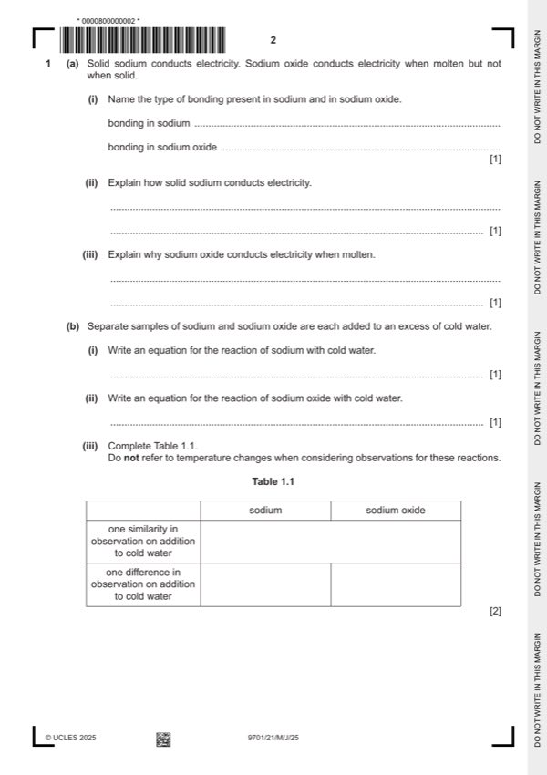

Question 1

Original paper page 2
Part 1(a)(i) — solution
Answer: AND sodium oxide – ionic
sodium – metallic 1
AND sodium oxide – ionic
Mark points
- Correct result: AND sodium oxide – ionic
Part 1(a)(ii) — solution
delocalised electrons move (through the structure) 1
Mark points
- Include the ideas shown in the solution above.
Part 1(a)(iii) — solution
(sodium and oxide) ions move (through the liquid) 1
Mark points
- Include the ideas shown in the solution above.
Part 1(b)(i) — solution
- 2Na + 2H2O → 2NaOH + H2 1
Mark points
- 2Na + 2H2O → 2NaOH + H2 1
Part 1(b)(ii) — solution
- Na2O + H2O → 2NaOH 1
Mark points
- Na2O + H2O → 2NaOH 1
Part 1(b)(iii) — solution
Answer: 2 · OR (both produce) colourless solutions
2
sodium sodium oxide
(both) solids disappear
one similarity
OR (both produce) colourless solutions
one difference effervescence no effervescence
Mark points
- Correct result: 2
- Correct result: OR (both produce) colourless solutions
Part 1(c) — solution
- [M1] NaCl +1 AND PCl 5 + 5 2
- [M2] Na has only 1 valence (shell) electrons AND P has 5
Mark points
- [M1] NaCl +1 AND PCl 5 + 5 2
- [M2] Na has only 1 valence (shell) electrons AND P has 5
Part 1(d) — solution
- false
- comparison or statement of oxidation number
- correct link to melting point from their comparison or statement
Mark points
- false
- comparison or statement of oxidation number
- correct link to melting point from their comparison or statement